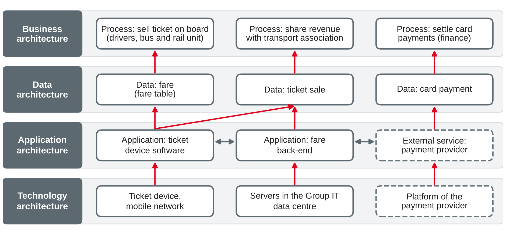

IT Management and EAM
What enterprise architecture is and why it matters · business, data, application and technology architecture · fields of action and stakeholders of EAM
DHBW · Digital Business Management (Business IT) · Semester 4
You were asked to list the five most important applications of your training company.
Architecture, enterprise architecture and EAM
A building
A city
A solution architect designs one building; an enterprise architect works like a city planner for the whole landscape of business and IT.
Own illustration based on Hanschke (2023) and Keller (2017).
Architecture describes the fundamental structure of a system: its elements, their relationships to each other and to the environment, and the principles that guide its design and evolution.
Own wording based on ISO/IEC/IEEE (2022) and The Open Group (2022).
Enterprise architecture (EA)
Enterprise architecture management (EAM)
EAM is not the drawing of diagrams. It is the continual process of making architecture decisions transparent and steering change towards the target.
Own wording based on Keller (2017), Ahlemann et al. (2012) and Hanschke (2023).
Goals of EAM and the operating model
| Symptom | EAM goal |
|---|---|
| IT does not know which processes depend on which applications | Business–IT alignment, transparency |
| Three systems for the same task, each with licences and staff | IT cost reduction, less heterogeneity |
| A new digital product takes years because data are scattered | Time-to-market |
| After an acquisition, nobody knows which systems to keep | Managing mergers |
| An auditor asks where personal data are stored — weeks of searching | Compliance, security, risk |
| Contracts and sourcing are decided per project | Consistent sourcing strategy |
Own examples; goals based on Keller (2017) and Hanschke (2023).
The idea
Four operating models
| Low standardisation | High standardisation | |
|---|---|---|
| High integration | Coordination | Unification |
| Low integration | Diversification | Replication |
Own illustration based on Ross et al. (2006).
Own wording based on Ross et al. (2006).
Rhein-Neckar Mobil Group (sessions 3–9). Which EAM goal does each symptom point to — and which earlier session dealt with a similar problem?
Business, data, application and technology architecture
Each domain supports the one above it — changes in one domain have effects in the others.
Own wording based on The Open Group (2022) and Hanschke (2023).
Typical elements
Questions it answers
Own summary based on The Open Group (2022) and Hanschke (2023).
Typical elements
Questions it answers
Own summary based on The Open Group (2022) and Hanschke (2023).
Typical elements
Questions it answers
Own summary based on The Open Group (2022) and Hanschke (2023).
Typical elements
Questions it answers
Own summary based on The Open Group (2022) and Hanschke (2023).

Own illustration based on The Open Group (2022); own example.
| Source | Domains |
|---|---|
| TOGAF | Business · data · application · technology (data + application = information systems) |
| Hanschke | Business · information systems · technical · operations infrastructure |
| ArchiMate (session 17) | Strategy · business · application · technology · physical · implementation and migration |
| Zachman (1987) | Not layers, but a matrix: perspectives (owner, designer, builder …) × questions (what, how, where, who, when, why) |
The names differ, the idea is the same: separate concerns, but keep the relationships between them.
Own comparison based on The Open Group (2022), Hanschke (2023), Lankhorst (2017) and Zachman (1987).
Assign each element of Rhein-Neckar Mobil Group to the business, data, application or technology architecture.
What EAM does and for whom
Transparency
Document the landscape: processes, applications, interfaces, technologies and their relationships.
Strategic planning
Derive a target architecture and roadmap from the strategy; manage the application portfolio.
Steering projects
Assess demands and projects against the target; architecture guidance and reviews.
Standards and principles
Set architecture principles and technology standards; reduce heterogeneity.
Risk, compliance, operations
Provide dependencies for security, BCM, data protection and audits.
Transformation
Support business transformation, digital business models, mergers and sourcing.
Own grouping based on Hanschke (2023) and Ahlemann et al. (2012).
| Where EAM is embedded | What EAM contributes | Link to Part A |
|---|---|---|
| Strategic planning | Target architecture, roadmap, input to IT strategy and the project portfolio | IT strategy (2), portfolio management (4) |
| Project life cycle | Architecture requirements at project start, reviews at quality gates, update of the as-is | Governance bodies (3), change enablement (6) |
| Operations and monitoring | Dependencies for incidents, BIA and audits; architecture KPIs | Service management (5–6), risk and BCM (7–8) |
EAM works when it is part of decisions that are taken anyway — not as a separate documentation exercise.
Own summary based on Ahlemann et al. (2012).
| Stakeholder | Typical concern |
|---|---|
| Board, CEO | Does IT support the strategy? Where should we invest? |
| CIO, IT management | Cost, complexity, roadmap, standards |
| Heads of business units, process owners | Which applications support my processes? When does my demand get delivered? |
| Project managers, solution architects | Which standards and interfaces must my project follow? |
| IT operations, service owners | Dependencies, life cycles, capacity |
| CISO, data protection officer, auditors | Where are critical and personal data? Which risks exist? |
| Controller, purchasing | Cost per application, licences, contracts |
Own compilation based on Ahlemann et al. (2012) and Hanschke (2023).
| Stakeholder | Concern | Suitable view |
|---|---|---|
| Board | Where do we invest? | Capability map with heat map of strategic importance |
| Data protection officer | Where are personal data? | Data flow diagram of personal data across applications |
| Project manager | What does my project touch? | Interface map of the affected applications |
Own wording based on ISO/IEC/IEEE (2022) and Lankhorst (2017).
Case: Rhein-Neckar Mobil Group (sessions 3–9): 3,200 employees, €410 million turnover, three business units, federated IT. The CEO wants a joint mobility app by 2028: one customer account and one payment for bus, regional train and car sharing.
Preparation: find out where your training company documents its applications (Excel list, CMDB, wiki, EAM tool?) — and who keeps the list up to date.
TOGAF® and ArchiMate® are registered trademarks of The Open Group. Diagrams in this deck are own illustrations. Standards are described in own words.